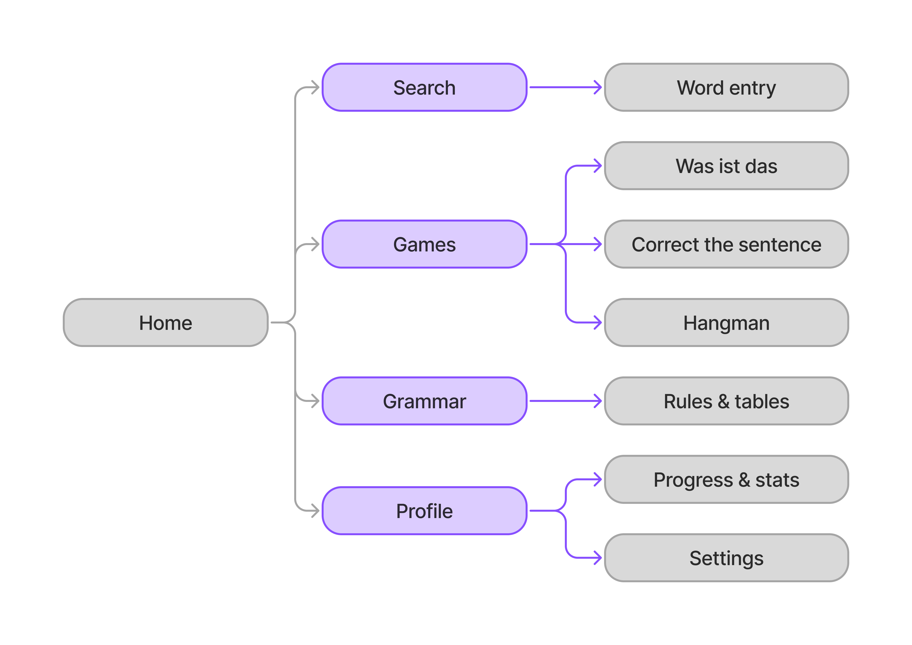
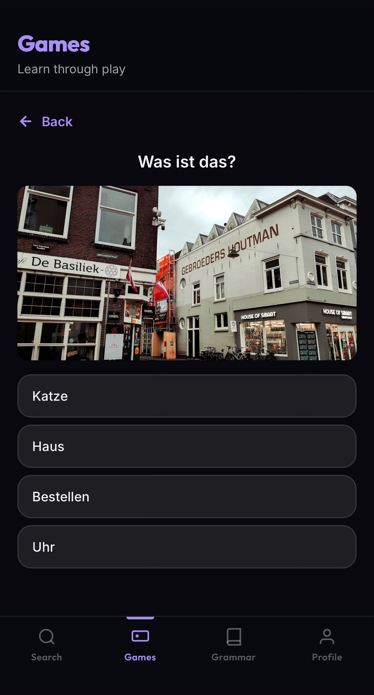
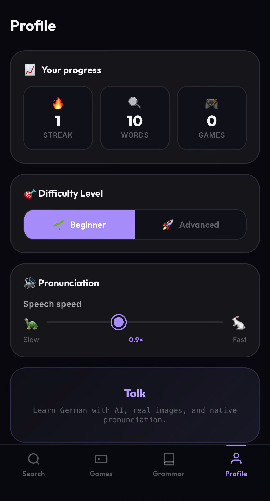
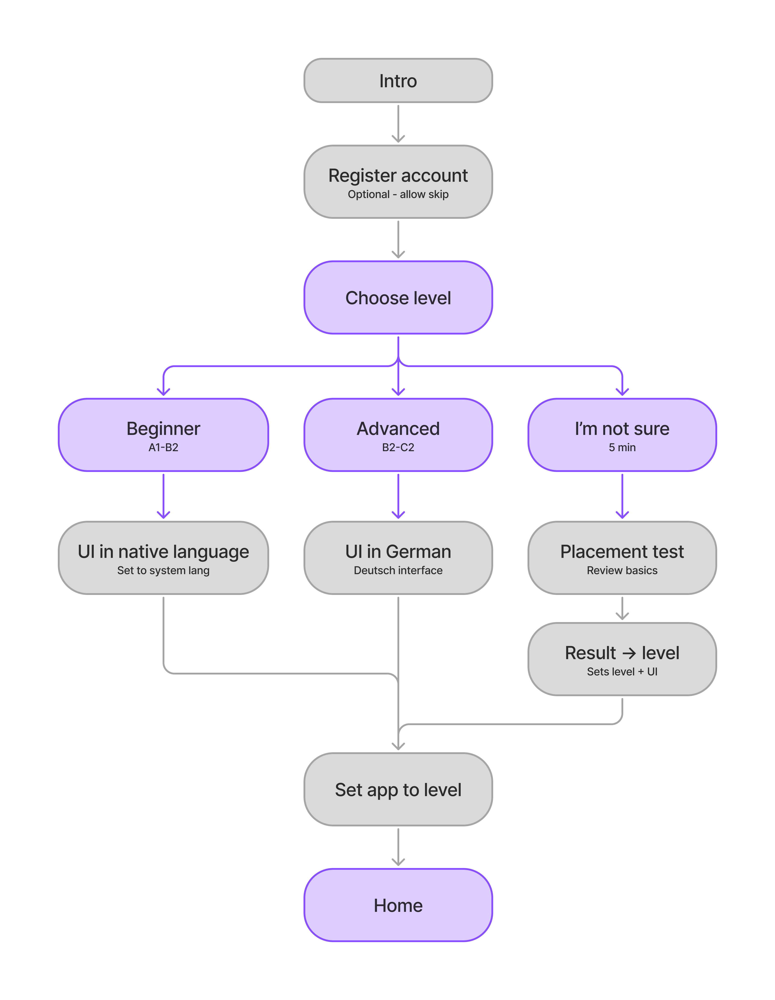
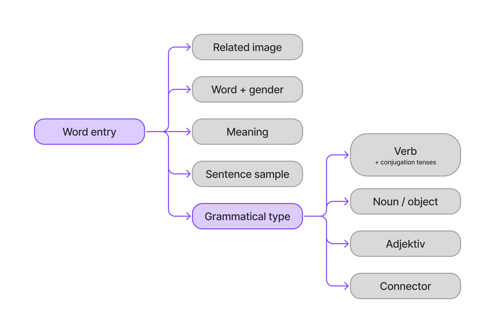
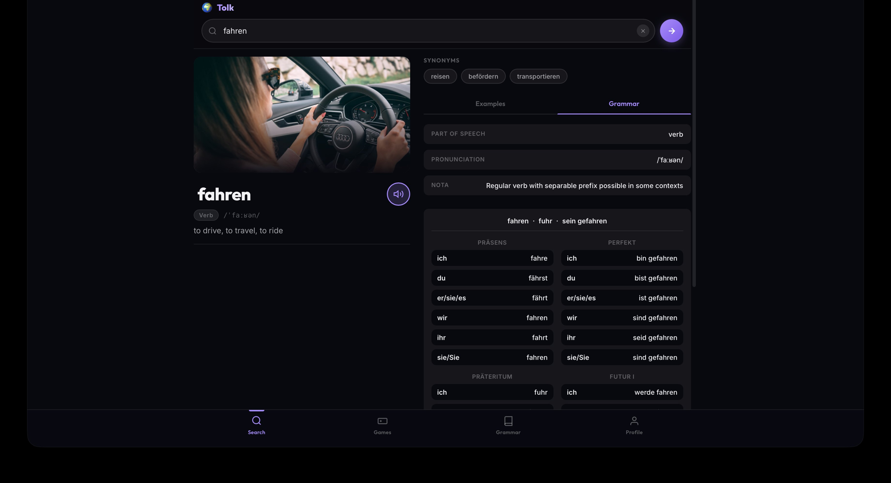

Tolk — a German learning tool I built because the existing apps didn't fit how I actually learn.
An early-stage, in-progress product. This case study focuses on the design decisions and the reasoning behind them — which is where most of the work lived.

The starting point
Most language apps are built around streaks, points, and daily goals. They assume you have 20 minutes, a quiet space, and the motivation to show up every day. That's not how I learn. Living in Leipzig, I needed something I could pick up for 30 seconds while waiting for the tram, or spend an hour with when I was curious about a word I heard that day. The existing tools forced me into their structure. I wanted something that fit mine.
So I built Tolk — a German learning web app structured entirely around a single question: what does this word mean, and how do I actually use it?
How I approached it
My constraint was simple: I wanted to practice German without it feeling like practice. That meant the app couldn't feel like a classroom or a game with lives and streaks — it had to feel like a tool I actually wanted to open. I focused entirely on UX. Antigravity handled the UI execution. The goal was to get from zero to something I'd use daily in one session — and to validate the concept with real use before investing more time.
Navigation by intent: five tabs down to four
The old bottom bar mixed unrelated mental modes — a lookup tool, passive learning, active practice, reference, and configuration — competing for the same scarce space. I regrouped navigation around user intent and cut it to four: Search, Games, Grammar, Profile. Settings, low-frequency, moved into Profile; an underdeveloped Music mode was deferred rather than shipped half-built.
Shows: information architecture, mental models, editing down.



Protecting activation: Search stays the landing screen
The original structure proposed a summary dashboard as home. I pushed back: Tolk is dictionary-first, so the highest-value move is to land the user directly in the core action with zero friction — that serves activation. A progress dashboard serves retention, which wasn't validated yet, so I moved those stats into Profile rather than letting them gate the main task. I documented a lighter option — a thin progress strip above Search — as a future move if retention becomes the priority.
Shows: separating activation from retention, resisting vanity surfaces, sequencing by what's validated.

Resolving the onboarding flow
Onboarding branched on the user's level — beginner, advanced, or "not sure" — but the original flow never showed how "not sure" resolved. I closed the gap: the placement test routes into the same two outcomes as the explicit choices, and each path sets both the interface language and the level (beginner → native-language UI; advanced → German UI). I also removed the account-creation step, because it contradicted a later decision about authentication.
Shows: flow rigor, handling the branch everyone forgets, internal consistency.

Deferring accounts: local-first persistence
"Save my progress" reads as "build login," but they're not the same thing. I separated them: progress persists locally on the device first, with no account required. This keeps the product feeling like it remembers the user while a lightweight email-capture test measures whether people actually want to register — before committing to building authentication. I structured the saved data as a single versioned store, so that once registration intent is validated, migrating local progress into real accounts is a clean one-step job rather than a rewrite.
Shows: scope discipline, validation-driven design, designing for a future state without over-building the present.
Level-adaptive conjugation, on a real content model
German verbs carry a lot of conjugation. Showing all nine tenses to a beginner is noise; hiding them from an advanced learner is a gap. I tied conjugation depth to the user's level — a compact everyday set for beginners, the full set for advanced — and designed the display to adapt per device. Underneath sits a structured content model: every word entry resolves to an image, gender, meaning, a sample sentence, and a grammatical type that branches into verb, noun, adjective, or connector — each carrying only the depth that type needs.
Shows: progressive disclosure, content-dense UX, a real linguistic data model.

One consistent pattern across devices
I extended the mobile-first app to iPad and laptop with a hybrid model — most views stay a centered, readable column; a few (word entry, conjugation, games, stats) use the extra width — while keeping one navigation pattern across devices so users never relearn the layout. Along the way I corrected a stats block that had shipped unstyled, rebuilding it so the number is the visual hero and the label recedes, making progress legible at a glance.
Shows: responsive / cross-device design, design-system consistency, visual hierarchy.

What this project shows
That I can go from problem to live product in a single session. That I use the same tools and thinking on personal projects as I do on client work. And that the best way to understand a user's problem is sometimes to be that user.
Status & next steps
Live at gedio-uv.github.io/deutsch-lernen — currently sharing with German classmates for feedback. Next iteration will be shaped by real input from people actively learning the language at B1–B2 level.
Interested in
working together?
I'm currently open to Senior Product Designer roles across Germany and Europe.